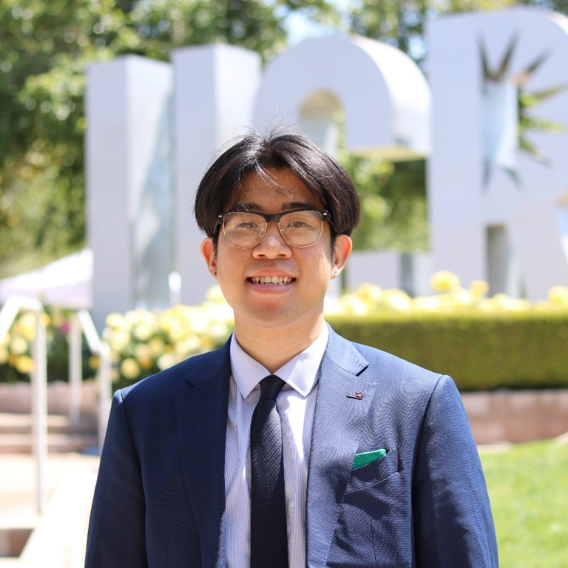

Hi, I'm Ethan Vuong!
I’m an aspiring Event Specialist located in the 626 area.
I love creating genuine memories and experiences between people in a community.
Projects
- CORSAIR – During my twelve weeks at CORSAIR I worked under the trade marketing team to help create meaningful events that showcased CORSAIR's extensive product line. I was given the opportunity to spearhead the planning process for The Best Buy Leadership Meeting, a B2B tradeshow with 1,500 attendees, and Gamescon 2023, a B2C convention with 300,000 attendees. I also created designs for new merchandise and apparel alongside the design team.
- Highlander Gaming – Highlander Gaming is UCR's premier gaming and esports club. During my time building the club from the ground up after covid, I planned a multitude of different events to bridge a connection between gamers on campus that expanded beyond a compute screen. This included tabling sessions, online and in-person socials, professional development nights, cosplay contests, as well as full-on conventions! My proudest accomplishment was successfully hosting HighlanderCon, a day long convention in our main HUB building that connected over 1,000 gaming enthusiasts. This convention included events such as tournaments between different collegiate schools across California, performances from different UCR clubs, Artist Alleys, professional development panels, as well as sponsorship coordination with different companies.
Contact Me
Email: vuongethan@gmail.com
LinkedIn: yourprofile
Resume
View my resume